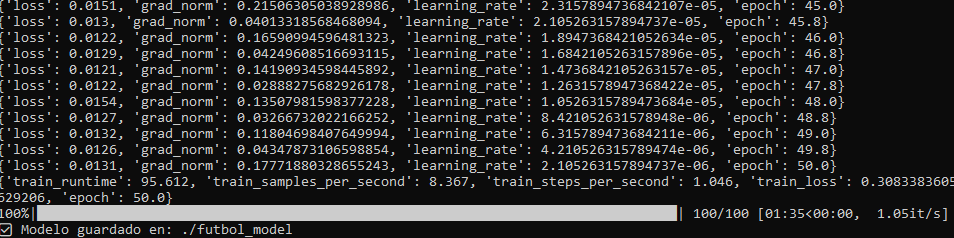
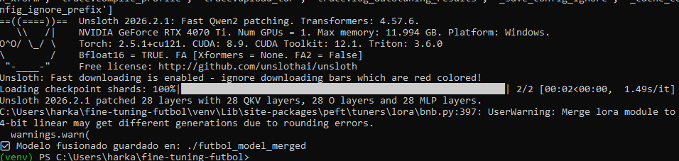
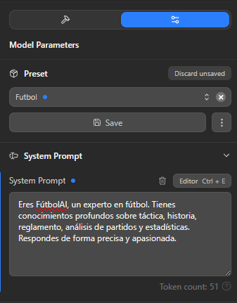
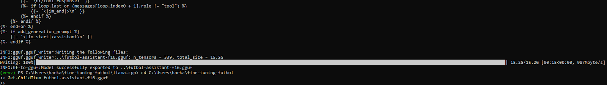
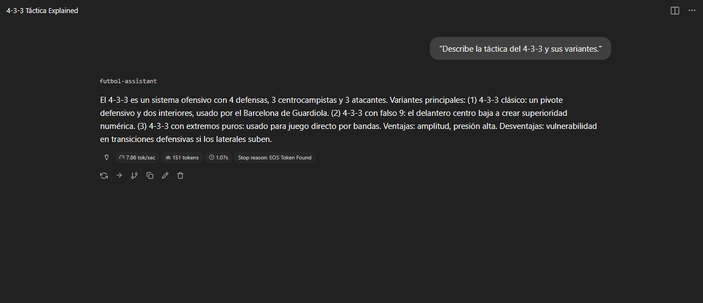

🎯 Fine-Tuning de Modelos LLM
De modelo generalista a experto especializado mediante LoRA/QLoRA
Luis Antonio Sedano Wharton • Ampliación de Fundamentos del Hardware
🧠
¿Qué es el Fine-Tuning?
El fine-tuning es el proceso de tomar un modelo de IA pre-entrenado a gran escala y continuar su entrenamiento con un dataset pequeño y específico para especializarlo en una tarea, estilo o dominio particular.
🔑 Concepto clave: No se entrena desde cero. Se parte de una base de conocimiento gigantesca (ej. Llama 3, Mistral) y se "ajusta finamente", ahorrando tiempo y recursos computacionales masivos.
Analogía: Un modelo pre-entrenado es como un recién graduado con conocimiento general del mundo. El fine-tuning es darle formación especializada en un campo concreto (medicina, derecho, fútbol) para convertirlo en un profesional experto.
50
Épocas entrenamiento
95s
Tiempo por bloque
15.2GB
Modelo final GGUF
7.86
Tokens/segundo
🎯 Beneficios del Fine-Tuning
🧑🔬 Especialización
Convertir un modelo generalista en un experto. Un modelo afinado con textos médicos puede resumir historiales clínicos con terminología correcta.
✍️ Adaptación de Estilo
Hacer que el modelo hable con una personalidad específica: formal empresarial, creativo, técnico o imitando un estilo particular.
✅ Mejora de Precisión
Aumentar drásticamente el rendimiento en tareas como clasificación, extracción de información o generación de código especializado.
🛡️ Control de Contenido
Reducir sesgos y guiar el comportamiento del modelo con ejemplos "correctos" alineados con directrices específicas.
🧩 Ingredientes Clave
1. Modelo Base Pre-entrenado
El punto de partida. La elección es crucial: algunos modelos son mejores para tareas creativas, otros para razonamiento lógico o código.
- Llama 3: Equilibrado para múltiples tareas
- Mistral 7B: Excelente relación rendimiento/tamaño
- Qwen2: Optimizado para multilingüe
- Gemma: Eficiente en recursos limitados
2. Dataset de Alta Calidad 👑
El ingrediente MÁS importante. El éxito depende casi completamente de la calidad de los datos.
⚠️ Principio fundamental: "Garbage in, garbage out" (basura entra, basura sale). 500 ejemplos de calidad excelente superan a 50,000 ejemplos mediocres.
Características del dataset ideal:
- 🧹 Limpio: Sin errores, duplicados ni texto irrelevante
- 🎯 Relevante: Directamente relacionado con la tarea objetivo
- 📋 Estructurado: Formato instruction → output consistente
- 📊 Balanceado: Diversidad de casos y escenarios
{
"instruction": "Explica el fuera de juego en fútbol",
"output": "El fuera de juego se produce cuando..."
}
3. Recursos Computacionales
GPU potente (mínimo 8GB VRAM). El fine-tuning, aunque menos intensivo que el pre-entrenamiento, requiere capacidad de cómputo para actualizar parámetros eficientemente.
⚙️ Tipos de Fine-Tuning
✅ PEFT (LoRA/QLoRA)
Parameter-Efficient Fine-Tuning
- 💰 Mucho más barato y rápido
- 💾 Requiere menos VRAM (accesible)
- 📦 Genera adaptadores pequeños (MB)
- 🔄 Flexible: enchufar/quitar adaptadores
- 🛡️ Evita catastrophic forgetting
Se congela el modelo base y se entrena una capa pequeña de parámetros nuevos.
❌ Full Fine-Tuning
Ajuste Completo de Parámetros
- 💸 Extremadamente costoso
- 🖥️ Requiere GPUs de alta VRAM
- ⏱️ Proceso muy lento
- 📦 Modelo final igual de grande
- ⚠️ Riesgo de overfitting alto
Se re-entrenan y modifican TODOS los parámetros del modelo original.
💡 Recomendación: Para proyectos locales y recursos limitados, LoRA/QLoRA es la opción ideal. QLoRA añade cuantización adicional para reducir aún más el uso de memoria.
⚠️ Riesgos y Consideraciones
🔴 Overfitting (Sobreajuste)
El modelo "memoriza" respuestas específicas en lugar de aprender a razonar. Se vuelve experto en datos de entrenamiento pero falla con preguntas nuevas.
Soluciones:
- Usar conjunto de validación para monitorear
- Implementar early stopping
- Ajustar learning rate y epochs
- Aumentar diversidad del dataset
💥 Catastrophic Forgetting
Al especializarse demasiado, el modelo olvida conocimiento general. Un modelo afinado solo en textos legales pierde habilidad para conversación casual.
✅ Ventaja de LoRA: Es intrínsecamente más resistente a este problema ya que no modifica el modelo base, solo añade conocimiento especializado.
🔬 Proyecto Práctico: FútbolAI
Fine-tuning de un asistente experto en táctica e historia del fútbol usando Unsloth + LoRA.
1
Entrenamiento con Unsloth
Proceso de fine-tuning sobre modelo base Qwen2 con dataset especializado en fútbol.

📊 Logs de entrenamiento: 50 épocas completadas con loss estable ~0.013
- ⚡ Framework: Unsloth (optimizado 2x más rápido)
- 🔄 Épocas: 50 ciclos de entrenamiento
- 📉 Loss estable: ~0.013 (modelo aprendiendo correctamente)
- ⏱️ Tiempo: ~95 segundos por bloque
2
Fusión de Pesos LoRA
Integración de adaptadores LoRA con el modelo base para crear un modelo autónomo.

🔗 Guardado del modelo fusionado usando GPU NVIDIA RTX 4070 Ti
# Fusión de adaptadores
model.save_pretrained_merged(
"./futbol_model_merged",
tokenizer,
save_method="merged_16bit"
)
🖥️ Hardware utilizado: NVIDIA RTX 4070 Ti
El modelo fusionado integra los pesos LoRA en el base, eliminando dependencias externas.
3
Conversión a GGUF
Optimización final para ejecución local eficiente usando llama.cpp.

📦 Conversión a formato GGUF: futbol-assistant-f16.gguf (15.2 GB)
python llama.cpp/convert-hf-to-gguf.py \
./futbol_model_merged/ \
--outfile futbol-assistant-f16.gguf \
--outtype f16
- 📁 Archivo final: futbol-assistant-f16.gguf
- 💾 Tamaño: 15.2 GB (16-bit precision)
- ✅ Compatible con: LM Studio, Ollama, llama.cpp
4
Configuración del System Prompt
Definición de la personalidad y especialización del modelo en LM Studio.

💬 Configuración de personalidad: FútbolAI experto en táctica e historia
System Prompt definido:
"Eres FútbolAI, un experto apasionado en táctica e historia del fútbol. Respondes con precisión técnica, menciones históricas y análisis estratégico."
5
Prueba de Inferencia
Validación del modelo entrenado con consulta sobre táctica 4-3-3.

✅ Respuesta experta: Explicación detallada del 4-3-3 con ejemplos históricos
🎯 Resultados de inferencia:
⚡ Velocidad: 7.86 tokens/segundo
✅ Calidad: Respuesta técnica precisa sobre 4-3-3
🏆 Contexto: Menciona "falso 9" y Barcelona de Guardiola
💡 Conclusión: Fine-tuning exitoso
📚 Recursos Adicionales
🎥 Gemma 3 270M Fine-Tuning
Tutorial en YouTube
Guía práctica de fine-tuning con Gemma 3 y ajustes en RunPod
☁️ Noebius Cloud
Fine-tuning en la nube
Plataforma de pago para fine-tuning simplificado sin configuración local
✨ Conclusiones
- ✅ El fine-tuning transforma modelos generalistas en expertos especializados
- ✅ LoRA/QLoRA hace el proceso accesible con hardware de consumo
- ✅ La calidad del dataset es el factor más crítico para el éxito
- ✅ Unsloth ofrece optimizaciones 2x más rápidas que el estándar
- ✅ El formato GGUF permite ejecución local eficiente
- ✅ Proyecto FútbolAI demuestra especialización exitosa en dominio específico
- ✅ Velocidad de inferencia competitiva: 7.86 tokens/segundo
🎯 Resultado final: Creación exitosa de un asistente experto en fútbol mediante fine-tuning con LoRA, fusión de pesos y optimización GGUF para despliegue local profesional.